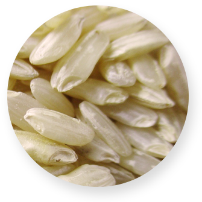
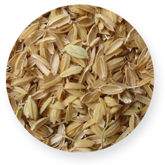
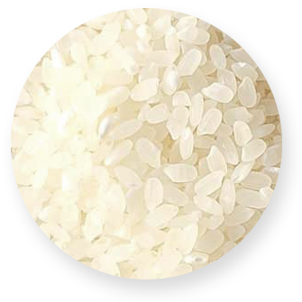
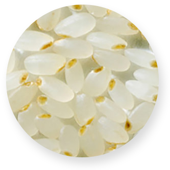

SINCE 1964
정직한 쌀, 신선한 쌀
50년 전통의 정성드린 도정으로 감사의 마음까지 담아 보냅니다.
미소 정미소의 쌀이야기
원료곡 선별과 석발, 분쇄 과정을 거쳐 먼지와 이물질을 제거하고
혼합기를 이용하여 위생적이며 청결하게 만들고 있습니다.
아호분층
미강
영양분29%
(쌀겨 : 아호분층, 호분층
종피,식물성 지방, 섬유질)
백미
영양분5%
(배유 : 전분층
단백질, 탄수화물, 지방 등)
쌀눈
영양분66%
(배아 : GABA, 비타민
미네랄군, 베타시스테롤,
휘친산 등)




도정과정
위생적이고 청결하게
제품을 생산하고 있습니다.
제품을 생산하고 있습니다.

TV출현
영상 다시보기
쌀의 숨겨진 비밀
소비자와 농부, 우리 이웃들
모두가 미소지을 수 있는 착한소비
쌀
농부의 마음
이웃의 미소
미소정미소